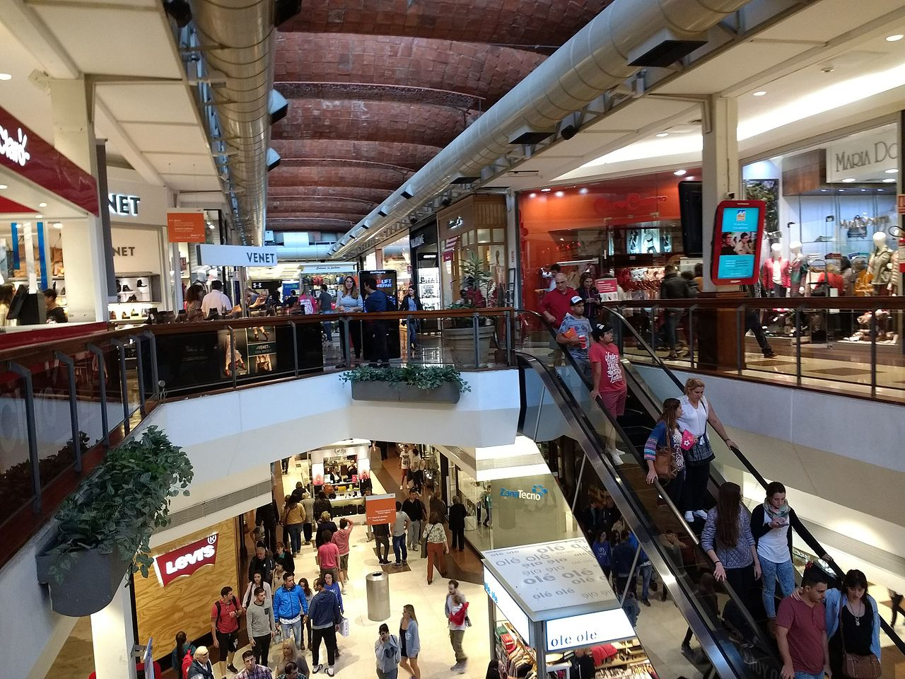

The tech hub of the Eastside and its three major shopping locations
The Lincoln Square mall & Bellevue Square mall are located in downtown Bellevue next to each other by dowtntown Bellevue Park. The Lincoln Square mall opened in 2005 combining upscale retail and fine dining with bowling at Lucky Strike and movies at the Cinemark theater. Bellevue Square mall opened in 1946 under the name "Bellevue Shopping Square." It has over 180 retails stores with anchors Macy's and Nordstrom. There are multiple stores ranging from categories such as clothing, health & fitness, entertainment, outdoors and food. Both are collectively referred to as "the Bellevue Collection" making up over 5.5 million square foot retail space operated by Kemper Development Group.
Crossroads Mall is located in eastern Bellevue approximately 4 miles away from downtown Bellevue. It originally opened in 1962 and is a multi-purpose shopping center that comprises of several restaurants offering multiple types of cuisines, wide range of retail stores, Crunch Fitness and Stone Gardens and the nearby Regal Crossroads theater.
Factoria Mall first opened in 1977 and is located approximately 4 miles south of downtown Bellevue in the multi-purpose neighborhood that comprises both a commercial and residential area. Factoria mall is smaller than the other Bellevue malls however has plenty of unique offerings that make it a destination spot. It is one of only two Wal Mart's in Bellevue as well as being home to other major retail stores such as Target, Nordstrom Rack, and Old Navy. The nearby area has grown significantly in the past few years owning to the T-Mobile headquarter buildings being located across the street.